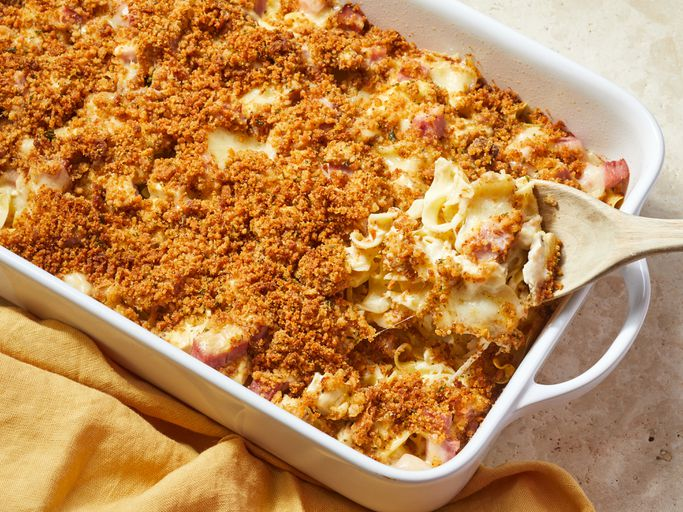

Casserole Recipe

How to Make the Perfect Casserole
Gather the following ingredients and follow these steps to make the most
delicious casserole:
Ingredients
- Noodles
- Cheese
- Chicken
- Soup
- Butter
Steps
-
Boil and drain the noodles, then transfer to a prepared casserole dish.
- Top the noodles with chicken, ham, and Swiss cheese.
-
Combine the soup, milk, and sour cream in a bowl, then spoon over the
noodle mixture.
- Make the topping and sprinkle it over the casserole.
- Bake until the casserole is bubbling and lightly browned.